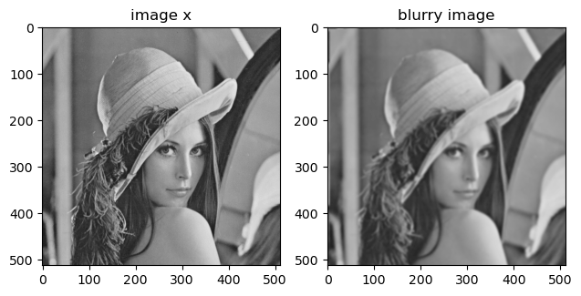
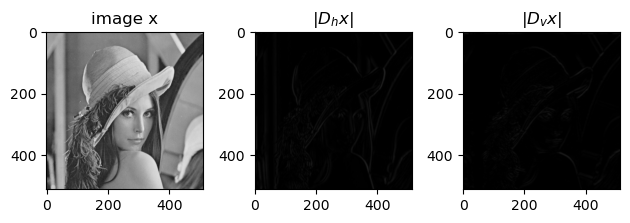
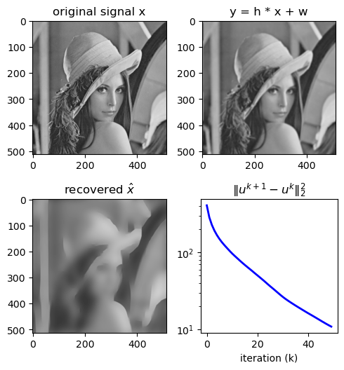

2D Total variation deblurring#

Our signal model: $\(y = h \ast x + \omega \quad \text{where} \quad w\sim\mathcal{N}(0,\sigma^2I).\)$
import numpy as np
import cv2
from matplotlib import pyplot as plt
import scipy.signal as signal
import scipy.fft as fft
import urllib.request
# Reading image (grayscale)
url = "https://i.stack.imgur.com/kP0u2.png"
# url='https://encrypted-tbn0.gstatic.com/images?q=tbn:ANd9GcSRsK5QFJ1arEQlnHEJ-020xbO30BgdYgPJBg&usqp=CAU'
# url='https://unsplash.com/photos/IoZA1Mwiq2g/download?ixid=MnwxMjA3fDB8MXxzZWFyY2h8MTZ8fGJsYWNrJTIwYW5kJTIwd2hpdGUlMjBmbG93ZXJ8ZW58MHx8fHwxNjc5MzQxODY4&force=true&w=640'
with urllib.request.urlopen(url) as url_response:
img_array = np.asarray(bytearray(url_response.read()), dtype=np.uint8)
img = cv2.imdecode(img_array, cv2.IMREAD_GRAYSCALE)
# img is a 3-dimensional numpy array (third number indicates channel)
x = img.astype(float) / 255.0
print(type(img))
print(img.shape)
plt.imshow(x, cmap="gray")
<class 'numpy.ndarray'>
(512, 512)
<matplotlib.image.AxesImage at 0x7f0244c70eb0>

### Define some of the operators that we need...
def conv2d_fft(x, h):
p0 = x.shape[0] - h.shape[0]
p1 = x.shape[1] - h.shape[1]
h_pad = np.pad(h, ((0, p0), (0, p1)))
Fh = fft.fft2(h_pad)
Fx = fft.fft2(x)
return np.real(fft.ifft2(Fx * Fh))
def conv2dT_fft(x, h):
p0 = x.shape[0] - h.shape[0]
p1 = x.shape[1] - h.shape[1]
h_pad = np.pad(h, ((0, p0), (0, p1)))
Fh = fft.fft2(h_pad)
Fx = fft.fft2(x)
return np.real(fft.ifft2(Fx * np.conj(Fh)))
# the blurring kernel
h = np.ones([7, 7])
h /= h.sum()
# Make image blurry
h = cv2.getGaussianKernel(9, 2)
h = np.dot(h, h.T)
H = lambda x: conv2d_fft(x, h)
HT = lambda x: conv2dT_fft(x, h)
# form the observed image
sigma = 5.0 / 255.0
y = H(x) + (sigma**2) * np.random.randn(*x.shape)
fig = plt.figure()
plt.subplot(121)
plt.imshow(x, cmap="gray", clim=[0, 1])
plt.title("image x")
plt.subplot(122)
plt.imshow(y, cmap="gray", clim=[0, 1])
plt.title("blurry image")
# plt.imshow(y, cmap='gray', clim=[0,1])
# plt.title('y = h * x + w')
plt.tight_layout()
plt.show()
print(y.shape)

(512, 512)
# define gradient operators
dh = np.array([[1, -1], [0, 0]]) # horizontal gradient filter
dv = np.array([[1, 0], [-1, 0]]) # vertical gradient filter
Dh = lambda x: conv2d_fft(x, dh)
Dv = lambda x: conv2d_fft(x, dv)
DhT = lambda x: conv2dT_fft(x, dh)
DvT = lambda x: conv2dT_fft(x, dv)
# plot the image x and the gradient images Dh x and Dv x
fig = plt.figure()
plt.subplot(131)
plt.imshow(x, cmap="gray", clim=[0, 1])
plt.title("image x")
plt.subplot(132)
plt.imshow(np.abs(Dh(y)), cmap="gray", clim=[0, 1])
plt.title(r"$|D_hx|$")
plt.subplot(133)
plt.imshow(np.abs(Dv(y)), cmap="gray", clim=[0, 1])
plt.title(r"$|D_vx|$")
plt.tight_layout()
plt.show()

TV-debluring problem formulation#
Problem formulation:
\[\underset{x}{\mathrm{minimize}}~~\underbrace{\frac{\mu}{2} \|y - Hx\|_2^2}_{\text{data fidelity}} +\underbrace{ \left\| D x \right\|_1}_{\text{regularization: sparse gradient}}\]
where \(D = \begin{bmatrix}D_h\\D_v\end{bmatrix}\). A quick note on the TV-norm: there are two types of TV-norm usually used in the literature:
\[\begin{split}\begin{cases}\text{anisotropic: } &\|Dx\|_1 = \sum_i \left|(D_h x)_i\right|+\left|(D_v x)_i\right| \\ \\ \text{isotropic: } &\|Dx\|_{TV2} = \sum_i \sqrt{(D_h x)_i^2+(D_v x)_i^2}\end{cases}\end{split}\]
we are using anisotropic TV-norm for our formulation. You can read more about the both cases in this paper.
Let’s derive ADMM iterations!#
Problem in ADMM form:
\[\underset{x,z}{\mathrm{minimize}}~~\frac{\mu}{2} \|y - Hx\|_2^2 +\|z\|_1, \quad \text{subject to:}\quad Dx - z = 0\]
The augmented Lagrangian:
\[\mathcal{L}(x,z,u) = \frac{\mu}{2} \|y - Hx\|_2^2 +\|z\|_1 + \frac{\rho}{2} \|Dx - z + u\|_2^2\]
ADMM iterations:
for \(k = 1, \cdots, K\):
update \(x\):
\[x^{k+1} \leftarrow \arg\min_{x}~\mathcal{L}(x,z^k,u^k) \equiv \arg\min_{x}~ \frac{\mu}{2} \|y - Hx\|_2^2 + \frac{\rho}{2} \|Dx - z^{k} + u^{k}\|_2^2 \]update \(z\):
\[z^{k+1} \leftarrow \arg\min_{z}~\mathcal{L}(x^{k+1},z,u^k) \equiv \arg\min_{z}~ \frac{\mu}{2} \|z\|_1 + \frac{\rho}{2} \|z - (Dx^{k+1} + u^{k})\|_2^2 \]update \(u\):
\[u^{k+1} \leftarrow u^{k} + \rho (Dx^{k+1} - z^{k+1}) \]
# a TV-deblurring solver
def TV_debluring(y, h, mu=1e3, rho=1e1, maxiter=200):
"""
TV-deblurring solver to solve
minimize 0.5 mu |y-Hx|_2^2 + |Dx|_1
"""
# define the soft-thresholding function
soft_thresh = lambda v, t: np.maximum(np.abs(v) - t, 0.0) * np.sign(v)
# initilize our operators
H = lambda x: conv2d_fft(x, h)
HT = lambda x: conv2dT_fft(x, h)
# the HHT can be computed using fft2
p0 = x.shape[0] - h.shape[0]
p1 = x.shape[1] - h.shape[1]
h_pad = np.pad(h, ((0, p0), (0, p1)))
HHT = np.abs(fft.fft2(h_pad)) ** 2
# define gradient operators
dh = np.array([[1, -1], [0, 0]]) # horizontal gradient filter
dv = np.array([[1, 0], [-1, 0]]) # vertical gradient filter
Dh = lambda x: conv2d_fft(x, dh)
Dv = lambda x: conv2d_fft(x, dv)
DhT = lambda x: conv2dT_fft(x, dh)
DvT = lambda x: conv2dT_fft(x, dv)
# DDT
p0 = x.shape[0] - dh.shape[0]
p1 = x.shape[1] - dh.shape[1]
dh_pad = np.pad(dh, ((0, p0), (0, p1)))
p0 = x.shape[0] - dv.shape[0]
p1 = x.shape[1] - dv.shape[1]
dv_pad = np.pad(dv, ((0, p0), (0, p1)))
DDT = np.abs(fft.fft2(dh_pad)) ** 2 + np.abs(fft.fft2(dv_pad)) ** 2
# initilize iteration variables
zh = np.zeros_like(y)
zv = np.zeros_like(y)
uh = np.zeros_like(zh)
uv = np.zeros_like(zv)
x_hat = np.zeros_like(y)
J = np.zeros(maxiter)
for k in range(maxiter):
# solve the L2-L2 problem
rhs = mu * HT(y) + rho * (DhT(zh) + DvT(zv)) - DhT(uh) - DvT(uv)
F_rhs = fft.fft2(rhs)
x_hat = np.real(fft.ifft2(F_rhs / (rho * DDT + mu * HHT)))
# solve the TV problem
zh = soft_thresh(Dh(x_hat) + (1.0 / rho) * uh, 1.0 / rho)
zv = soft_thresh(Dv(x_hat) + (1.0 / rho) * uv, 1.0 / rho)
# update u
dual_h = rho * (zh - Dh(x_hat))
dual_v = rho * (zv - Dv(x_hat))
uh = uh - dual_h
uv = uv - dual_v
# compute the error
J[k] = (dual_h**2).sum() + (dual_v**2).sum()
return x_hat, J
x_hat, J = TV_debluring(y, h, mu=1, rho=2, maxiter=50)
fig = plt.figure()
fig.set_size_inches(5, 7.5)
ax = fig.add_subplot(321)
ax.imshow(x, cmap="gray", clim=[0, 1])
plt.title("original signal x")
ax2 = fig.add_subplot(322)
ax2.imshow(y, cmap="gray", clim=[0, 1])
plt.title("y = h * x + w")
ax3 = fig.add_subplot(323)
ax3.imshow(x_hat, cmap="gray", clim=[0, 1])
plt.title(r"recovered $\hat{x}$")
ax4 = fig.add_subplot(324)
ax4.semilogy(range(len(J)), J, "b-", lw=2)
plt.title(r"$\|u^{k+1}-u^{k}\|_2^2$")
plt.xlabel("iteration (k)")
plt.tight_layout()
plt.show()
